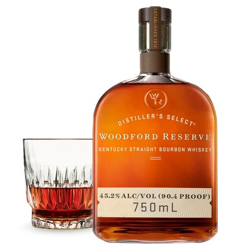
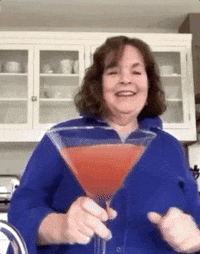
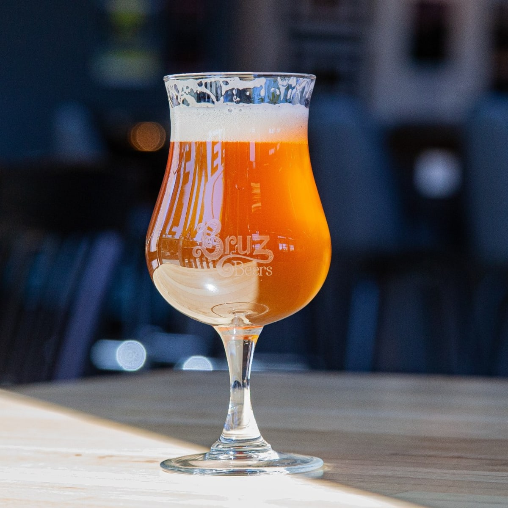
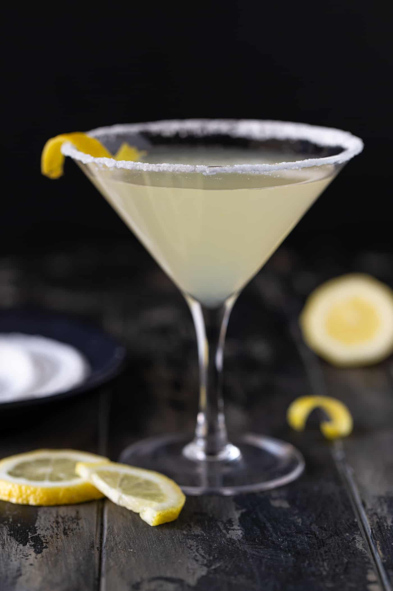
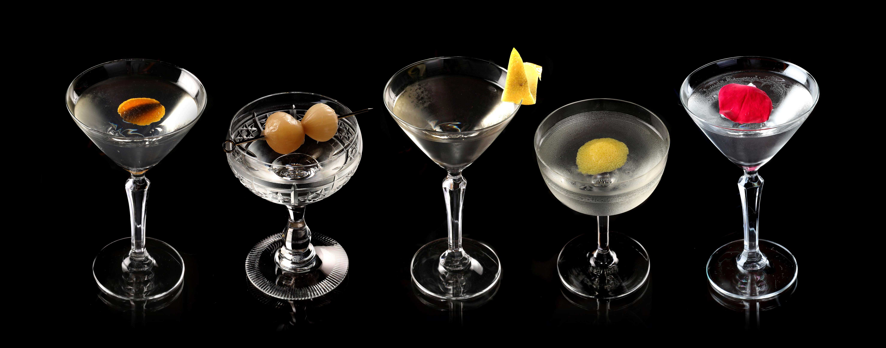
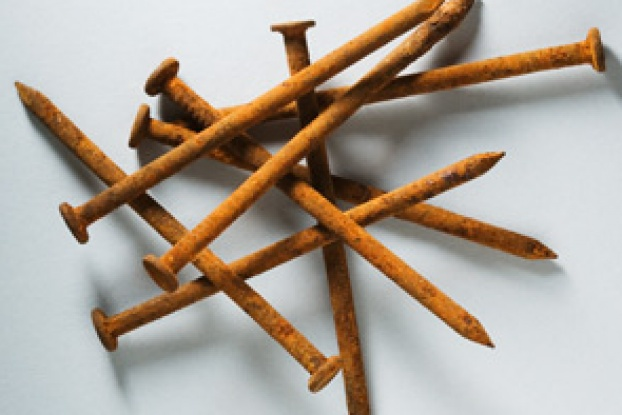
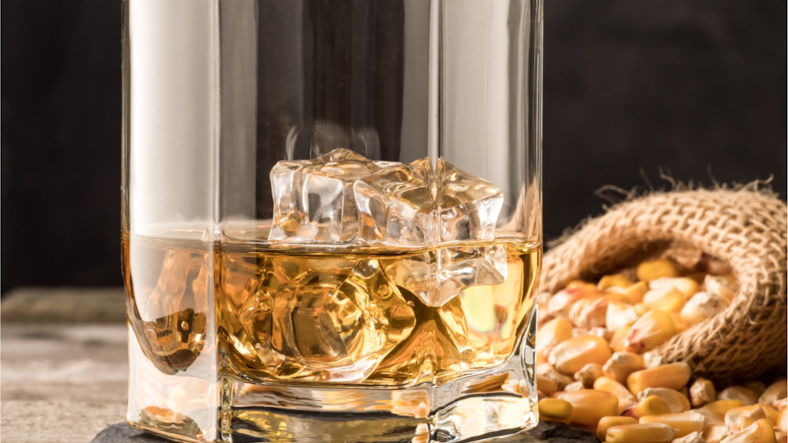

Cocktail Trivia
Which one of this choices IS NOT a whiskey?
Ahhh....the classic Cosmo: Vodka, Cointreu, Cranberry juice, AND????
Which one of this spirits belongs in a Manhattan?

What does IPA stand for?
Which one of these ingredients has no business in a Lemon Drop Martini?
What is the proper garnish for a Gibson?
Some old guy walks up to you and asks for a 'Rusty Nail' What do you give him?
Bourbon must be made from ATLEAST how much corn?
What is the minimum time Reposado tequilas must be aged?

Which two spirits belong in a Vesper?

Score